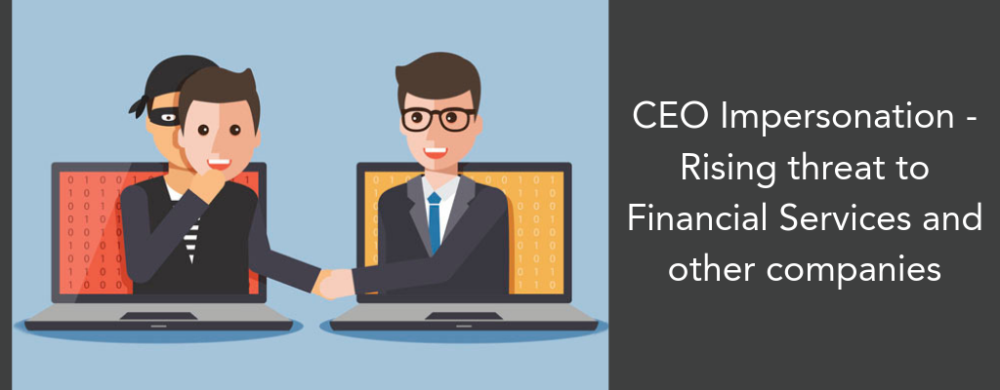

Humans, the weakest in chain 3
I am, you -- by impersonation

Hey everyone, this is 3rd blog in series of “Humans, the weakest chain”, if you haven’t read previous blogs read here. In today’s blog we are going to get impersonated, so let’s begin…
First things first, what is Impersonation?

In layman terms, Impersonation is when someone pretends to be another person, but the pretension must be legit. If I pretend to be Prarthana Behere, it will be a false pretension, but if I have her let’s Instagram account and I am talking to you from her account, then it is called a valid Impersonation attack. “In Human Hacking, Impersonation is basic of majority of Social Engineering attack.“
Today’s blog is related to this phenomenon!! the “Ubiquiti Networks attack, 2015“
Ubiquiti Networks, is a manufacturer of technology for networking devices and technology. In a such Phishing attack, they lost about $40 Million Dollars to hacker.
Here is what might happened!
Being a MNC Ubiquiti Networks had Offices around the countries along with Hong Kong. One of the Employee of Ubiquiti Networks at Hong Kong department was victim to Phishing attack in which he gave away his Email Credentials(user,passwd) to hackers. The Targeted Employee was working at accounting Department, so taking advantage of the favorable situation, hacker made small small Fraudulent payments making up the total of $40 Million Dollars.
They later discovered that the request of Payments was being Impersonated and company lost such a huge amount to hackers.
Humans are the weakest in chain of Cyber-Security. We are not machines, humans are tent to make mistakes and learn from that mistakes. This is life. No matter at what position you are working at, no matter what your company is working on, every employee and staff member is supposed to learn Cyber-Security and make their Families Educated too in this kind of things.
That’s it for today, I hope you enjoyed. See you in next blog, till then have a nice day & babye!!
© hackkeencyber